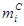
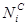
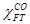
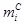
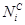
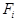
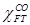
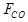

International Journal of Environmental Pollution and Remediation (IJEPR)
ISSN: 1929-2732

Volume 3 - Year 2015 - Pages 9-15
DOI: 10.11159/ijepr.2015.002
Nano-Iron Carbide-Catalyzed Fischer-Tropsch Synthesis of Green Fuel: Surface Reaction Kinetics-controlled Regimes in a 3-φ Slurry-Continuous Stirred Tank Reactor
Nicolas Abatzoglou and Benoit Legras
Université de Sherbrooke, Department of Chemical and Biotechnological Engineering
2500 boul. Université, Sherbrooke, Quebec, Canada J1K 2R1
Nicolas.Abatzoglou@USherbrooke.ca
Abstract - Liquid fuel derived from renewable resources is one of the technologies under development as part of "biorefining" platforms. Fisher-Tropsch synthesis (FTS) is a commercial technology producing alternative fuels from coal (CTL- Coal-To-Liquid) and natural gas (GTL; Gas-To-Liquid). FTS Biomass-To-Liquid (BTL), although not yet at the market level, is a continuously-growing field, and its successful commercialization depends on improving techno-economic sustainability.
In a previous study by the authors' research team, a plasma-synthesized nano-iron carbide catalyst (PS-Nano-FeC) demonstrated direct relationship to the presence of iron carbide high-FTS and water-gas-shift (WGS) activity, with high-catalyst stability and regenerability in a 3-phase slurry, continuously-stirred tank reactor (S-CSTR). Although these results, along with a recently-published phenomenological model, are indicators of the industrial potential of this catalyst, transport phenomena, chemical mechanisms and their intrinsic kinetics are needed as reactor scale-up tools.
In the work reported here, the PS-Nano-FeC catalyst was tested in a S-CSTR with hexadecane as liquid carrier. We evaluated the optimal operating conditions for a surface-reaction, kinetics-controlled regime.
The results include: (1) Reactant conversion and product yields; (2) Fresh and used catalyst instrumental analyses; (3) A model considering all transfer and surface kinetics, accompanied by proof of the rate-controlling step.
Keywords: Green Fuels; Biorefinery; Fischer-Tropsch synthesis; Nanocatalyst; Slurry reactor; Kinetics; Plasma-spray
© Copyright 2015 Authors - This is an Open Access article published under the Creative Commons Attribution License terms. Unrestricted use, distribution, and reproduction in any medium are permitted, provided the original work is properly cited.
Date Received: 2014-08-21
Date Accepted: 2014-12-21
Date Published: 2015-01-12
Nomenclature:
- ab: Bubble Surface Area (m2/m3 solution)
- BTL: Biomass-To-Liquid
- Ci: Concentration of i Species in Liquid Phase
- CTL: Coal-To-Liquid
- Fi: Molar Flow Rate of Component I at the Exit
- FID: Flame Ionization Detector
- FTS: Fisher-Tropsch Synthesis
- G-L: Gas-Liquid
- GTL: Gas-To-Liquid
- HC: Hydrocarbon
- k: Specific Reaction Rate (m3/gcat.s)
- kb: Mass-Transfer Coefficient for Gas Absorption
- kc: Mass-Transfer Coefficient to the Catalyst (m/s)
- L-S: Liquid-Solid
- m: Mass Concentration of the Catalyst (gcatalyst/m3 solution)
- : Carbon Molar Selectivity of Product i
- : Number of Carbon Atom in HC i
- PS-Nano-FeC: Plasma-Synthesized-Nano-Iron Carbide
- rb: Diffusional Resistance (External Mass Transfer)
- P: Pressure
- Ri: Generation Rate of Species i in (mass per time unit par mass or volume unit)
- RA: Apparent Reaction Rate (mol/m3solution.s)
- S-CSTR: Slurry-Continuous-Stirred-Tank-Reactor
- SEM: Scanning Electron Microscopy
- T: Temperature
- TGA: Thermo-Gravimetric Analysis
- XRD: X-Ray Diffraction)
- WGS: Water-Gas-Shift
Greek letters
- : Molar fraction of CO consumed in FTS
- : Catalyst effectiveness factor
1. Introduction
Escalating crude oil prices and environmental considerations are motivating great interest in shifting from fossil to biomass and waste resources as feedstock of transportation fuels. Biomass and waste gasification involves a combination of partial oxidation and steam reforming, leading to synthesis gas production with controlled hydrogen (H2)/carbon monoxide (CO) ratio. The latter is defined by the needs of Fischer-Tropsch Synthesis BTL processes. FTS reactions are commonly simplified as a combination of Fischer-Tropsch FT (Eq. 1) and water-gas-shift (WGS) reactions (Eq. 2)
where n is the average number of carbon atoms and m is the average number of hydrogen atoms of hydrocarbon (HC) products. Water is a primary product of FTS reactions, and CO2 is mainly produced by WGS reaction. Iron-based catalysts have high WGS rates [1]. Although WGS is not a desired reaction, its extent may be exploited to adjust poor H2/CO reactant mixtures. Ruthenium and cobalt-based catalysts have negligible WGS activity, but the low cost and high stability of iron catalysts, especially when they are alkali-promoted, make the latter more attractive FTS catalysts. Most of these iron catalysts, used for many years industrially [2, 3], are prepared by precipitation techniques [4, 5, 6]. In a previous paper, Blanchard et al. [7] presented a novel catalyst preparation method employing a plasma-spray technique for the production of a nano-iron-carbide catalyst. This preparation method allows large batch production amounts and gives spherical core-shell iron carbide-graphitic carbon nanoparticles. The graphitic shell provides easy handling of the catalyst in ambient conditions without significant oxidation extent. The carbon-based shell needs preliminary in situ H2 reduction to activate the catalyst prior to FTS.
A major aspect in the development of commercial FTS is the choice of reactor type [8]. The 2 most favourite systems for FTS are the multi-tubular trickle bed reactor and the slurry bubble column reactor. Their advantages and disadvantages have already been published [9]. The slurry reactor has the following main advantages over its competitors: 4 times lower differential pressure over the reactor; lower catalyst loading; excellent heat transfer characteristics resulting in stable and homogeneous reactor temperature; introduction of fresh catalyst is possible during runs; and lower investment capital. To scale-up such a FTS reactor, kinetics studies are necessary to identify the rate-controlling steps and range of operating conditions, allowing for surface-reaction kinetics control of the phenomenon. In the present work, the reactor tested was a 3-phase slurry, continuously-stirred tank reactor (S-CSTR) that is considered be an ideal, fully-mixed reactor, meaning that the following attributes/hypotheses were considered: perfect mixing (gradientless reactor, i.e., global uniformity of concentration and temperature throughout reactor volume). Conditions under which surface-reaction kinetics are the rate-limiting step were determined, and a 50-h FTS experiment was run under optimum conditions to examine catalyst stability over time-on-stream.
2. Materials and Experimental Methodology
2.1. Catalyst Preparation
Iron carbide nanoparticles were prepared according to a previously-reported plasma spray technique [7].
2.2. Catalyst Characterization
The catalyst produced by plasma was characterized prior to its reduction by X-ray diffraction (XRD) and scanning electronic microscopy (SEM). XRD analyses disclosed the presence of 2 iron carbide phases (Fe5C2 and Fe3C) in a graphitic carbon matrix; some unconverted metallic iron was also identified (Figure 1). SEM analyses (Figure 2a) revealed unconverted iron spheres and 20- to 100-nm dispersed nanoparticles (Figure 2b).
The particle size distribution of plasma synthesis powder was assessed by laser diffraction with a Hydro 2000S Malvern Mastersizer Instrument. Measurement was undertaken with the nanopowder dispersed in dry ethanol. Number particle size distribution (Figure 3) confirmed that particle diameter was below 100 nm. The specific surface area of the catalyst was 67 m2/g and was measured by N2 physisorption after overnight degassing at 200°C, according to the Brunauer-Emmett-Teller method in a Micromeritics ASAP2020 apparatus. Thermogravimetric analysis (TGA) by a TA Instruments apparatus, coupled with a mass spectrometer to follow the CO2 produced, was performed for elementary analysis of the synthesis catalyst. A 10°C/min heating rate was imposed between ambient temperature and 1,000°C under 50-ml/min airflow. Air oxidation of carbides, amorphous and graphitic carbons led to iron III oxide, Fe2O3, as the only solid end-product. 34% iron weight composition was ascertained in the plasma synthesis catalyst. For FTS reaction, gas space velocity was based on elemental iron mass calculations.
3. FTS Reaction
3.1. Experimental Set-Up
The reaction apparatus is depicted in Figure 4. It includes an Engineer’s Autoclave set-up designed for high pressure and temperature reactions. The reactor is of 600-ml capacity and is equipped with a magnetic stirrer engaging a turbine impeller in liquid phase operating up to 3,000 rpm. Inlet reactant gas mixture composition is controlled by a Brooks mass flow meter connected to a premixed gas tank whose composition is representative of reformed biosyngas derived from thermal gasification with pure oxygen (11% CO2, 33% CO and 56% H2), a pure hydrogen gas tank to adjust H2/CO ratio and perform catalyst reduction pre-treatment, as well as an argon (Ar) gas tank to purge the system during stop and carrier liquid (hexadecane) feed. Inlet gas is fed into the reactor by a perforated, annealed pipe as sparger/diffuser at the reactor bottom. Outlet flow is heat-traced at 150°C to a high-pressure trap maintained at ambient temperature. Pressure is regulated by a micrometric needle valve. Expanded gas enters a 0°C trap and goes through a micrometric filter before exit gas flow monitoring by a BIOS Definer dry volumeter. Gas composition is analyzed continuously with a Varian micro-GC CP-4900 equipped with 2 columns, CP-Sil and CP-COX, coupled with a thermal conductivity detector. Periodic off-line gas analysis was performed by a Varian GC CP-3800 equipped with successive columns (Haysep T and Hayesep Q) coupled with a flame ionization detector (FID) to quantify C2H4 and C2H6 concentrations. Off-line analysis of the liquid product collected in the high-pressure trap was conducted with a Varian GC CP-3800 equipped with a capillary 0.25 mm x 0.5 μm x 100 m (CP7530) column coupled with a FID detector.
Prior to testing, the FTS nano-iron-carbide catalyst was activated in situ at 400°C for 6 h under a pure H2 flow rate of 6.7 ml/gcat/min and 500 rpm stirring. Hexadecane served as inert liquid carrier after saturation with Ar to avoid oxygen feed. 200 ml was fed into the reactor by means of an Ar-pressurized tank.
3.2. Mass Balance Calculations
As Blanchard et al. (2010) described previously, this set-up does not allow direct full mass balance. However, conversion of the reactants can be calculated appropriately considering their absolute amount in the inlet and outlet streams, including gas hold-ups in the reactor and high-pressure condenser. With this protocol, CO and H2 conversions were calculated, as was CO2 production. To consolidate mass balance and access to carbon molar selectivity values, the following hypotheses were made: (a) the formation of oxygenated HC products was assumed to be negligible, and (b) all liquid HC products were considered to have an average atomic H/C ratio=2.2.
CO consumption kinetics to HC was expected to follow Eq. 3.
Carbon molar selectivity  of product i in FTS was calculated from experimental carbon mole fractions relative to CO consumption in FTS reactions (Eq. 4).
Where  represents carbon number in HC i,  is the oulet i molar flow rate,  is the molar fraction of CO consumed in FTS reactions, and  is the CO inlet flow rate.
Average 3% and maximum 5% mass balance errors were calculated for each run. Conversion and selectivity values were computed after reaching steady state and waiting for at least 3 gas residence times.
3.3. Kinetics Study
Prior to analyzing the influence of operating conditions on reactant conversions and selectivity, it is always necessary to check for mass and heat transfer limitations. Eq. 5 expresses the reaction rate as a function of all resistances in a 3-phase slurry reactor [10].
where Ci represents the concentration of i species in liquid phase (mol/m3 solution), RA is the apparent reaction rate (mol/m3 solution.s), kb is the mass-transfer coefficient for gas absorption (m/s), ab is the bubble surface area (m2/m3 solution), m is mass concentration of the catalyst (gcatalyst/m3 solution), kc is the mass transfer coefficient to the catalyst (m/s), ac is the external surface area of particles (m2/g), η is the catalyst effectiveness factor, and k (m3/gcat.s) is the specific reaction rate. Different resistances were extracted to determine the limiting step: rb(s) expresses gas absorption resistance, and rcr(s), diffusional resistance to (external mass transfer) and in (internal mass transfer) the catalyst. Considering the nanometric size of the catalyst particles, the effectiveness factor was close to 1, and internal mass-transfer resistance could be neglected. It was experimentally demonstrated [11] that intra-particle diffusion limitation was significant in case of FTS for particle diameters above 1 mm; below 63 μm, no intra-particle diffusion limitation was apparent and fully intrinsic kinetics were observed [12]. rcr expression can be so reduced to Eq. 6.
Stirring rate was the first parameter studied. Efficient stirring maintains homogeneous catalyst suspension and bulk liquid concentration and minimizes gas bubble size. Thus the resistances attributed to gas-liquid absorption and to diffusion between bulk liquid and external surface of the catalyst particles respectively are minimized. The conversion of gas reactants was monitored under conditions unfavourable to gas absorption (relatively low pressure and high temperature, e.g., 10 bars and 275°C, respectively) and relatively large catalyst load (16.5 g) requiring high stirring rates to reach homogeneous suspension and fast reaction kinetics. The stirring rate was varied between 250 and 2,500. Corresponding results are presented in Figure 5. Above 2,000 rpm, CO conversion reaches a plateau, indicating that higher stirring rates do not improve the reaction rate. The results reported in Figure 5 led us to choose the safe value of 2,500 rpm in subsequent runs aimed at minimizing gas absorption resistance.
To ensure a surface-reaction-kinetics-limited regime, catalyst loading was varied to estimate gas absorption limitation. Three catalytic tests were undertaken with 4.5, 2.25 and 1.125 g catalyst loading in 200 ml hexadecane. CO conversion was monitored, and a CCO/ (-RCO)=f(1/m) chart was built. CO concentration in hexadecane was estimated (13), and RCO was the apparent CO consumption rate. Figure 6 shows that surface reaction kinetics + liquid-solid diffusion resistances were together overwhelmingly higher than gas absorption resistances. However, since the experiment was performed at 2,500 rpm, liquid-solid diffusion resistance was not limiting, as see in Figure 5. Consequently, surface-reaction-kinetics resistance was definitely the rate-limiting step, and this procedure allowed the phenomenological evaluation of such resistance.
3.4. Sources of Experimental Errors and Preliminary Statistical Analysis
Reactor inlet flow is controlled with a mass flow meter. The measured precision is +/-3%. The BIOS Definer dry volumeter used to measure the exit gas flow has a theoretical measurement error of the order of 0.1% but a real precision of 1% has been considered. GC analysis precision depends upon the products; except propane, exhibiting a fairly high error of 15%, all other gases measured have errors in the range of 1-2.5%. The reproducibility tests have shown a maximum error of 3% on reactants conversion as well as WGS and FTS selectivity calculations. Regarding the liquid FTS products, the errors related to each particular molecular weight component is a function of the latter. The basic hypothesis used is that all peaks have the same conversion factor. More details can be found in Abatzoglou et al. [14] and Blanchard [15].
4. Catalyst Efficiency and Stability
Proof of catalyst efficiency and stability over time-on-stream was the last contribution of our paper. Figure 7 reports the results obtained under conditions described in the legend.
This experiment took place in the set-up depicted in Figure 4. The term semi-continuous is used because a part of the product, the heavier components, accumulates in the reactor during the 50h duration run. Although the catalyst evolves towards more oxidized forms, as shown in previous publication of our group (16), this experiment shows a remarkable stability in terms of reactants (CO) conversion and FTS selectivity.
5. Conclusion
Our work has produced new data on a novel plasma-produced FTS nano-iron carbide catalyst. This new knowledge is critical for eventual scale-up of the technology.
- Although, slurry-phase reactors are characterized by the advantage of higher heat transfer rates, thus rendering this process control easier and more efficient, mass transfer phenomena are complex and their control is rather difficult. In the case of the nanocatalysts used in this work, gaseous reactants are transferred (solubilized) in the liquid carrier+products phase (G-L transport), then diffuse at the surface of the catalysts (L-S transport) and are adsorbed by its active sites. Since these nanocatalysts have no internal porosity other than that of the surrounding carbon matrix, internal mass transfer, which is usually the slowest mass diffusion step, is not an issue. This work has determined stirring conditions, which ensure optimal G-L mass transfer rates in the S-CSTR used. These optimal conditions mean that the overall phenomena are not mass-diffusion controlled.
- As a consequence of the above, under rather unfavourable mass transfer conditions, the results clearly show that the nanometric characteristics of this catalyst allow surface-reaction-kinetics to be the rate-controlling phenomenon of FTS reactions.
- The catalyst has demonstrated excellent efficiency (more than 90% CO conversion) and stability in a 50-h run under optimal CO conversion conditions. Moreover, FTS and WGS selectivity, defined and measured in (14, 15), have been equal stable over time-on-steam for this 50h run.
- A parametric analysis, using this catalyst as well other Fe and Co-based plasma-derived formulations is the next step of the running work.
Acknowledgements
The authors are indebted to the Natural Sciences and Engineering Research Council (NSERC) of Canada (Collaborative Research and Development, and Discovery grants program) and Enerkem Inc. for funding related to this project. The scientific input of Jasmin Blanchard and Prof. Nadi Braidy as well as the technical contributions of Henri Gauvin, Jacques Gagné and the personnel of the Centre of Materials Characterization (CCM) of the Université de Sherbrooke are gratefully acknowledged.
References
[1] G. P. Van Der Laan and A. A. C. M. Beenackers, "Intrinsic Kinetics of Gas-Solid Fischer-Tropsch and Water Gas Shift Reactions over a Precipitated Iron Catalyst," Appl. Catalysis A: General, vol. 193, no. 1-2, pp. 39-53, Feb. 2000. View Article
[2] H. Schulz, "Short History and Present Trends of Fischer-Tropsch Synthesis," Appl. Catalysis A: General, vol. 186, no. 1-2, pp. 3-12, Oct. 1999. View Article
[3] M. E. Dry, "The Fischer-Tropsch Process: 1950-2000," Catalysis Today, vol. 71, no. 3-4, pp. 227-241, Jan. 2002.View Article
[4] D. B. Bukur, L. Nowicki, R. K. Manne, and X. S. Lang, "Activation Studies with a Precipitated Iron Catalyst for Fischer-Tropsch Synthesis: II. Reaction Studies," J. of Catalysis, vol. 155, no. 2, pp. 366-375, Sep. 1995. View Article
[5] M. D. Shroff, D. S. Kalakkad, K. E. Coulter, S. D. Kohler, M. S. Harrington, N. B. Jackson, A. G. Sault, and, A. K. Datye, "Activation of Precipitated Iron Fischer-Tropsch Synthesis Catalysts," J. of Catalysis, vol. 156, no. 2, pp. 185-207, Oct. 1995. View Article
[6] R. J. O'Brien, L. Xu, R. L. Spicer, and B. H. Davis, "Activation Study of Precipitated Iron Fischer-Tropsch Catalysts," Energy & Fuels, vol. 10, no. 4, pp. 921-926, Jul. 1996. View Article
[7] J. Blanchard, N. Abatzoglou, R. Eslahpazir-Esfandabadi, and F. Gitzhofer, "Fischer-Tropsch Synthesis in a Slurry Reactor Using a Nanoiron Carbide Catalyst Produced by a Plasma Spray Technique," Ind. and Eng. Chemistry Res., vol. 49, no. 15, pp. 6948-6955, May 2010. View Article
[8] S. T. Sie and R. Krishna, "Fundamentals and Selection of Advanced Fischer-Tropsch Reactors," Appl. Catalysis A: General, vol. 186, no. 1-2, pp. 55-70, Oct. 1999. View Article
[9] R. Krishna and S. T. Sie, "Design and Scale-Up of the Fischer-Tropsch Bubble Column Slurry Reactor," Fuel Process. Technol., vol. 64, no. 1-3, pp. 73-105, May 2000. View Article
[10] H. S. Fogler, Elements of Chemical Reaction Engineering, 4th edition, New Jersey, USA: Prentice-Hall Int. Inc., 2006. View E-Book
[11] M. F. M. Post, A. C. V. Hoog, J. K. Minderhoud, and, S. T. Sie, "Diffusion Limitations in Fischer-Tropsch Catalysts," AIChE J., vol. 35, no. 7, pp. 1107-1114, Jul. 1989. View Article
[12] Zimmerman, W. H. and Bukur, D. B., "Reaction Kinetics over Iron Catalysts Used for Fischer-Tropsch Synthesis," Can. J. of Chemical Eng., vol. 68, no. 2, pp. 292-301, Apr. 1990. View Article
[13] B. B. Breman, A. C. C. M. Beenackers, and, E. Oesterholt, "A Kinetic Model for the Methanol-Higher Alcohol Synthesis from CO/CO2/H2 Over Cu/ZnO-based Catalysts Including Simultaneous Formation of Methyl Esters and Hydrocarbons," Chemical Eng. Sci., vol. 49, no. 24, pp. 4409-4428, Jan. 1994. View Article
[14] N. Abatzoglou, J. Blanchard, and F. Gitzhofer, "Nano-Iron Carbide-Catalyzed Fischer-Tropsch Synthesis in Slurry Reactors: New Developments," Presented at the 20th European Union Biomass Conference and Exhibition, UK, 2012. View Article
[15] J. Blanchard, "Fischer-Tropsch Synthesis in a Slurry Reactor Using a Nano-iron Carbide Catalyst," PhD Thesis, Dept. of Chemical Eng. And Biotechnological Eng., Université de Sherbrooke, Sherbrooke, Quebec, Canada, 2014. View Article
[16] N. Braidy, C. Andrei, J. Blanchard, and N. Abatzoglou, "From Nanoparticles to Process: An Aberration-Corrected TEM Study of Fischer-Tropsch Catalysts at Various Steps of the Process," Adv. Mat. Res., vol. 324, no. 197, pp.197-200, Aug. 2011. View Article